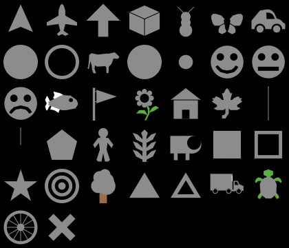
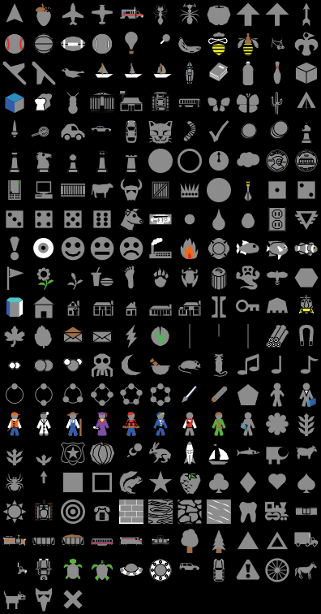

EES 4760/5760
Agent-Based and Individual-Based Computational Modeling
J. Magnolia Gilligan
Class #10: Tuesday, September 29, 2026
The observation design concept is about what you (the scientist) want to observe about your model to help answer your research question.
Some ways to observe your model include:
inspect turtle,
inspect patch, watch turtle,
follow turtle)set label elevation or
set plabel count turtles-here)set color blue or
set pcolor green)set shape "butterfly", set size 4)print, show, type,
write
file-print, file-show,
file-type, file-write
output-print, output-show,
output-type, output-write
Download butterfly model
https://ees4760.jmgilligan.org/models/class_10/butterfly_class_10.nlogox
and elevation file
https://ees4760.jmgilligan.org/models/class_10/ElevationData.txt,
save them in the same folder, and open the butterfly model in NetLogo.
Go to the code tab and look at update-display and
color-patches
Go to move and change
ifelse random-float 1 < q
[
uphill elevation ; Move uphill
]
[
move-to one-of neighbors ; Otherwise move randomly
] to
ifelse random-float 1 < q
[
uphill elevation ; Move uphill
set color red ; Set to red to indicate uphill
]
[
move-to one-of neighbors ; Otherwise move randomly
set color blue ; Set to blue to indicate random movement
] Edit crt in setup:
set label-color pinkEdit update-display:
to update-display
color-patches
ifelse show-butterflies?
[ask turtles [show-turtle]]
[ask turtles [hide-turtle]]
ifelse show-labels?
[ask turtles [set label
precision elevation 1 ]]
[ask turtles [set label ""]]
endSet num-butterflies to 1 or 5, press
setup, and run the model
label or plabel to a
variable:
label in update-display, and
call update-display every tick"")color-patches:to color-patches
ifelse patch-coloring = "elevation"
[
let max-elevation max [elevation] of patches
let min-elevation min [elevation] of patches
ask patches [ set pcolor scale-color green elevation
min-elevation max-elevation]
]
[
let max-turtles max [count turtles-here] of patches
let min-turtles 0
ask patches [ set pcolor scale-color cyan
(count turtles-here)
min-turtles max-turtles]
]
endTurn off show-labels? and
show-butterflies? and set num-butterflies to
50
Setup and run the model
Adjust display:
show-butterflies? off,update-display
Write a new reporter:
to-report fraction-crowded
let crowd-count sum [count turtles-here] of patches with [count turtles-here >= 4]
report crowd-count / num-butterflies
endAdd 3 monitors to the interface:
Mean elevation gets reporter
mean [elevation] of turtlesMean turtles gets reporter
mean [count turtles-here] of patches with [any? turtles-here]Fraction crowded gets reporter
fraction-crowdednum-butterflies to 6 and setup.Inspect Patch”inspect turtle 5 at the observer
line.watch turtle 3 at the observer
line.Add three plots:
histogram [count turtles-here] of patches
plot 100 * fraction-crowded
plot mean [elevation] of turtles
Set num-butterflies to 50 and run the model.
Turtle shapes:


See Shapes Editor in the NetLogo manual for details
ask turtles [set shape "butterfly"]First open file (generally, check whether a file exists, and delete it).
if (file-exists? "my_test_output.csv")
[
carefully ; Try the first block of code.
; If there's an error execute the second
[ file-delete "my_test_output.csv" ]
[ print error-message ] ; error-message is a primitive
]
file-open "my_test_output.csv"It’s also a good idea to write a header with the names of the columns.
file-type "id," ; file-type prints to file without ending the line
file-type "tick,"
file-print "elevation" ; file-print prints to file and ends the lineThen at each tick, you could write data:
file-open "my_test_output.csv"
ask turtles [
; turtle #, ticks, elevation on each line
file-type word who ","
file-type word ticks ","
file-print elevation
]When the model stops, you need to close the file.
to go
...
if ticks > 500
[
file-close-all
stop
]You can have multiple files open at once. Switch between them using
file-open.
file-open "turtle_output.csv"
ask turtles [
file-type word who ","
file-type word ticks ","
file-print elevation
]
file-open "summary_output.csv"
file-type word ticks ","
file-type word (mean [elevation] of turtles) ","
file-print 100 * fraction-crowdedIf you have plots, you can output the data from the plot to a
file using export-plot
export-plot "Fraction crowded" "frac_crowded.csv"You can export the current state of your entire model (all
turtles, patches, their turtles-own, patches-own variables, etc.) using
export-world
import-world
You can also export plots, world, etc. from the “File/Export” menu.
You can download the full model with different observations
we have been discussing at
https://ees4760.jmgilligan.org/models/class_10/butterfly_class_10_observing.nlogox